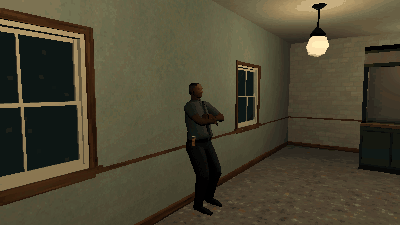

Tutorials › Make NPCs Turn Their Heads to the Player
How to Make NPCs Turn Their Heads to the Player in Godot 4
A person's chest, neck and head turn to the player who comes near, over whatever clip plays.

Background people look alive when they notice you. This script is a SkeletonModifier3D that turns a person's chest, neck and head to the camera when it comes near in front of them, on top of whatever clip plays: the turn shared by the bones (the chest a little, the head most), held within max_yaw, never faster than turn_speed, and back to the clip's own pose when the camera goes away or behind them.
Script: npc_head_turn.gd (MIT) · Godot 4.3 or newer · its folder on GitHub
How to use it
- Add a
SkeletonModifier3Dnode as a child of the character'sSkeleton3Dand attachnpc_head_turn.gdto it (or in code:skeleton.add_child(preload("npc_head_turn.gd").new())). - Set
bonesto the bones that share the turn and their shares, which add up to 1: by default Godot's humanoid names,[["Chest", 0.15], ["Neck", 0.35], ["Head", 0.5]]. - Set how far it turns (
max_yaw, degrees to each side), how fast (turn_speed, degrees a second) and from how near (distance, metres across the floor);yawholds the turn now, in degrees (left of the face positive).
What it needs
- Godot 4.3 or newer (SkeletonModifier3D came in 4.3).
- A Skeleton3D with the bones in
bones, its last one the head, whose +Z is where the face points. - A current Camera3D: the turn follows the viewport's camera.
Try it free
The PSX Bystanders NPC Pack Free Sampler has two of the pack's people with every clip, the office worker and the young man: put one's model from cordatix/psx_bystanders/models/ in a scene, play a clip and add the script under its Skeleton3D. The pack's own NPC layer has a fuller turn of its own (CordatixBystanderLook), so the script is for a model without the layer.
How it was tested
In Godot 4.3 and 4.7.2, on the free sampler's office worker playing Idle: it turns to a camera 30 degrees to the left until the face is on it, holds at max_yaw past it, never turns faster than turn_speed when the camera jumps across, goes back to the clip's own pose when the camera is behind or far, and the clip plays on under the turn.
The code
extends SkeletonModifier3D
## How to Make NPCs Turn Their Heads to the Player in Godot 4
## Cordatix Godot 4 PSX tutorials, MIT licensed: https://github.com/GoldenSparrow-Dev/cordatix-godot-psx-tutorials
## The devlog: https://cordatix.itch.io/psx-bystanders-npc-pack/devlog/1737124/how-to-make-npcs-turn-their-heads-to-the-player-in-godot-4-psx-bystanders-npc-pack
## Turns a person's chest, neck and head to the camera when it comes near in front of them, over whatever clip plays:
## the turn shared by the bones (the chest a little, the head most), held within max_yaw, at most turn_speed degrees a
## second, and back to the clip's own pose when the camera goes away or behind them. Add it as a child of the
## person's Skeleton3D (Godot 4.3 or newer). The head bone's +Z is where the face points.
## The bones that share the turn, and their shares (they add up to 1).
@export var bones: Array = [["Chest", 0.15], ["Neck", 0.35], ["Head", 0.5]]
## Degrees to each side, at most.
@export var max_yaw := 65.0
## Degrees a second, at most.
@export var turn_speed := 30.0
## How near the camera must come (metres, across the floor).
@export var distance := 4.0
## The turn now, in degrees (left of the face positive).
var yaw := 0.0
var _ids: Array = []
func _process_modification() -> void:
var sk := get_skeleton()
if sk == null:
return
if _ids.is_empty():
for b in bones:
var i := sk.find_bone(String(b[0]))
if i >= 0:
_ids.append([i, float(b[1])])
if _ids.is_empty():
return
var want := 0.0
var cam := get_viewport().get_camera_3d()
if cam:
# where the camera is, against where the face points in the clip alone, across the floor
var head: Transform3D = sk.global_transform * sk.get_bone_global_pose(_ids[-1][0])
var face := head.basis.z
var to := cam.global_position - head.origin
var angle := rad_to_deg(atan2(face.z * to.x - face.x * to.z, face.x * to.x + face.z * to.z))
if Vector2(to.x, to.z).length() < distance and absf(angle) < 100.0: # near, and not behind
want = clampf(angle, -max_yaw, max_yaw)
yaw = move_toward(yaw, want, turn_speed * get_process_delta_time())
# each bone turns its share about the vertical through its joint, in its parent's space
var up := (sk.global_transform.basis.inverse() * Vector3.UP).normalized()
for e in _ids:
var i: int = e[0]
var parent := sk.get_bone_parent(i)
var axis := up if parent < 0 else (sk.get_bone_global_pose(parent).basis.inverse() * up).normalized()
sk.set_bone_pose_rotation(i, Quaternion(axis, deg_to_rad(yaw * float(e[1]))) * sk.get_bone_pose_rotation(i))
The devlog and the pack
The step-by-step walkthrough is the devlog How to Make NPCs Turn Their Heads to the Player in Godot 4 (PSX Bystanders NPC Pack) on itch.io, written for PSX Bystanders NPC Pack, a PS1-style asset pack by Cordatix for Godot 4, Unity, Unreal and Blender.